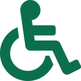
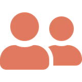
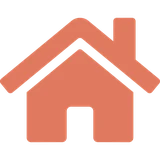
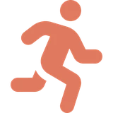
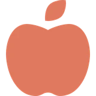

Themenfeld 3.5 · Gesundheit – Krankheit
Biologie · Jahrgang 9 · Stunde 1
Do Now · Wiederholung
1Nenne drei Organe des Menschen. Beschreibe zu jedem Organ eine Aufgabe.
Vorwissen aus Jahrgang 7/8. Die Anweisung darfst du dir vorlesen lassen.
Impuls

Eine Person im Rollstuhl nimmt an einer internationalen Sportveranstaltung teil.
Foto: Schulbuch S. 9
1Beurteile: Ist diese Person gesund oder krank? Kreuze an.
| gesund | krank | kommt darauf an |
2Begründe in 1 Satz.
Der Mann ist nach einem Fahrradunfall querschnittsgelähmt. Er macht Leistungssport, ist mehrfacher deutscher Meister (u. a. Rollstuhl-Curling, Tischtennis) und war bei internationalen Wettkämpfen.
Fragenentwicklung
Erarbeitung I · Definition
Weltgesundheitsorganisation WHO, Verfassung (deutsche Übersetzung)
z. B. Ernährung, Bewegung, Schlaf
z. B. Stress, Selbstwertgefühl
z. B. Freundschaften, Einbindung
1Formuliere die WHO-Definition (M1) in eigenen Worten. Nenne dabei die drei Dimensionen.
Wortspeicher: Wohl-be-fin-den · Di-men-si-on · Ge-brech-en
Erarbeitung II · Fall A
Schulbuch S. 9, „Gehandicapt“ (mit eigenen Worten gekürzt)
1Ordne seine Situation den drei Dimensionen zu. Zeige, wo Einschränkung und wo Wohlbefinden sichtbar wird.
| Dimension | Einschränkung | Wohlbefinden |
|---|---|---|
| körperlich | ||
| geistig | ||
| sozial |
Erarbeitung II · Fall B
Schulbuch S. 8, Erfahrungsbericht (mit eigenen Worten gekürzt)
1Beschreibe ihre Stimmungslage.
2Beurteile, ob sie gesund oder krank ist. Begründe mit den drei Dimensionen.
Satzstarter: Ich beurteile sie als … , weil sie körperlich … , aber geistig … und sozial …
Erarbeitung III · Einflussfaktoren
Gesundheitsrad (Schulbuch S. 9): 8 Einflussfaktoren

Beziehungen
Wohnung
Bewegung
Ernährung1Erläutere an Beispielen, wie sich diese Faktoren positiv oder negativ auf die Gesundheit auswirken können.
Satzstarter: Der Faktor … wirkt positiv, wenn … Er wirkt negativ, wenn …
Sicherung · Zurück zur Leitfrage
…
1Begründe: Warum reicht „keine Krankheit haben“ als Definition von Gesundheit nicht aus? Formuliert gemeinsam eine Antwort.
Gesundheit ist
Krankheit allein ist nicht das Gegenteil, weil
Reflexion · Selbsteinschätzung
Tippe an, wie sicher du dich fühlst. Das ist nur für dich.
Hausaufgabe · Transfer
Beurteile, welche Bedeutung die Einflussfaktoren des Gesundheitsrads für dein eigenes Wohlbefinden haben. Wähle 2 Faktoren aus und begründe in je 2–3 Sätzen.
Hilfe: Wähle Faktoren, die du aus deinem Alltag kennst. Nutze die Satzstarter von der Folie „Was beeinflusst unsere Gesundheit?“.